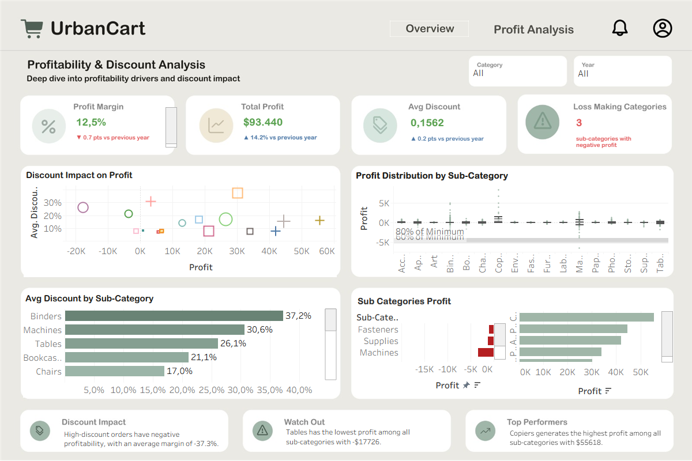
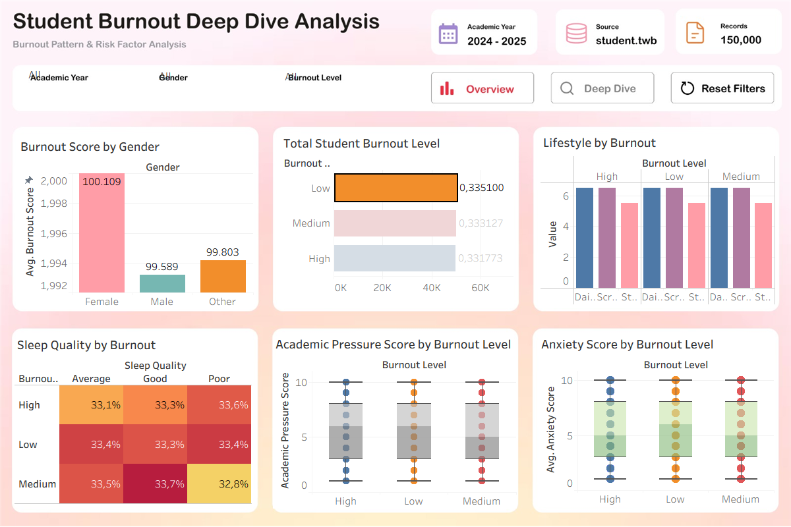
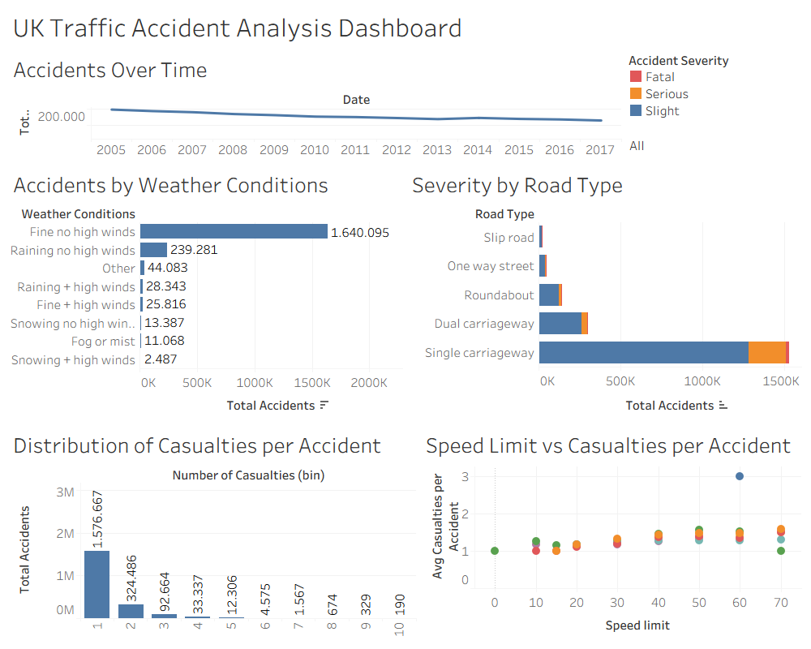

PROJECT 02 / BUSINESS INTELLIGENCE
Tableau Dashboard Collection
A collection of four Tableau dashboards exploring sales performance, customer subscription behavior, student burnout, and road traffic accidents through data visualization and business analysis.
01 / URBANCART SUPERSTORE
Sales Performance Overview
An overview of retail sales performance, including sales trends, geographic performance, product categories, and profitability.

Recorded sales
Recorded profit
Orders analyzed
Units sold
- Compared sales and profit across states and product categories.
- Analyzed monthly sales trends and forecast views.
- Examined category-level profit margins.
Profitability & Discount Analysis
A deeper analysis of product profitability, discount patterns, and sub-category performance to identify areas requiring further business investigation.

Overall profit margin
Total recorded profit
Average discount rate
Sub-categories with negative profit
- Compared profitability across product sub-categories.
- Explored the relationship between discount levels and profit.
- Identified loss-making sub-categories for further investigation.
The findings are descriptive and based on the displayed dataset; discount patterns alone do not establish causation.
DOWNLOAD URBANCART SUPERSTORE WORKBOOK ↗03 / BANK DEPOSIT SUBSCRIPTION
Understanding Customer Subscription Behavior
Analyzed customer subscription behavior and campaign performance to understand which customer segments and campaign patterns were associated with term deposit subscriptions.

Overall subscription rate
Customers who subscribed
Customer records analyzed
Average customer balance
- Compared subscription patterns across customer job and age groups.
- Examined campaign performance over time.
- Explored account balance patterns by subscription status.
04 / STUDENT BURNOUT
Exploring Academic Burnout Patterns
Explored student burnout alongside anxiety, sleep quality, lifestyle factors, and academic pressure to identify patterns across student groups.

Records analyzed
Students classified as high burnout
Average anxiety score
Average student CGPA
- Compared burnout patterns across academic years and age groups.
- Explored relationships with anxiety and sleep quality.
- Examined lifestyle factors and academic pressure.
05 / UK TRAFFIC ACCIDENTS
Analyzing Road Traffic Accident Patterns
Analyzed UK road traffic accident records to explore accident trends, weather conditions, casualties, and road-related factors.

Records analyzed
2005-2017
Per accident
No high winds
- Examined accident trends across the selected years.
- Compared accident conditions by weather and road type.
- Explored casualty patterns across speed limits and accident severity.